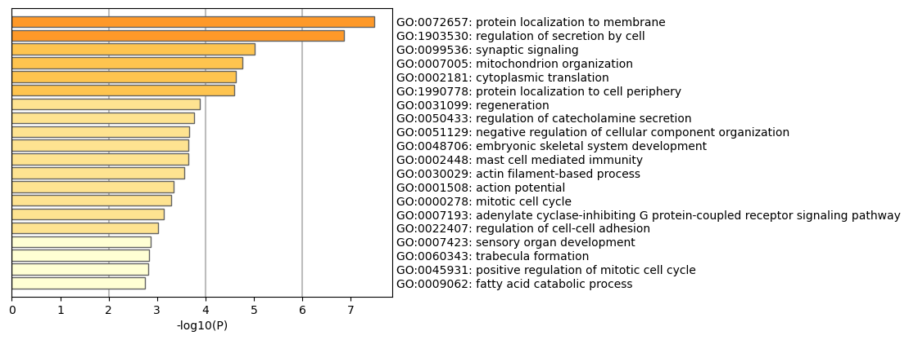
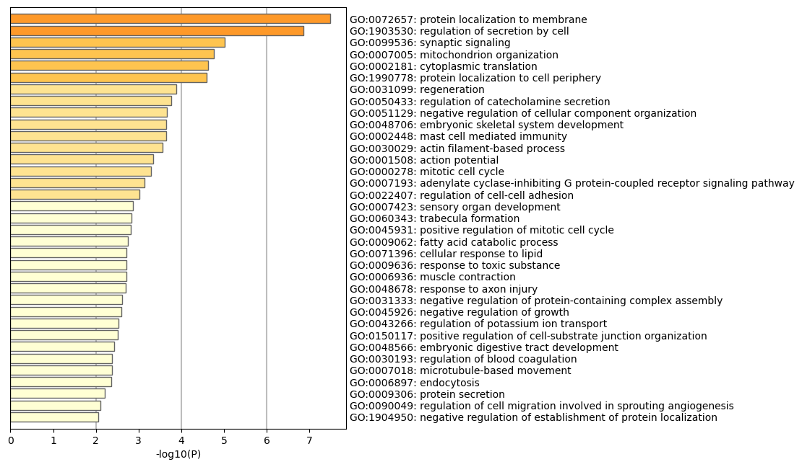
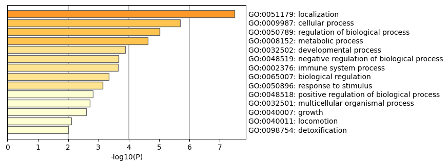
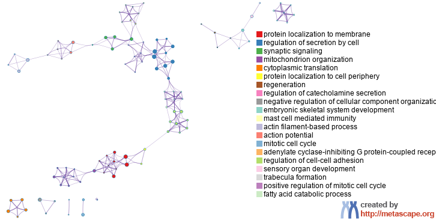
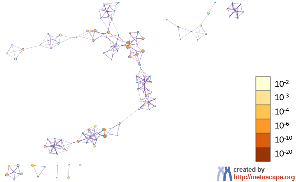
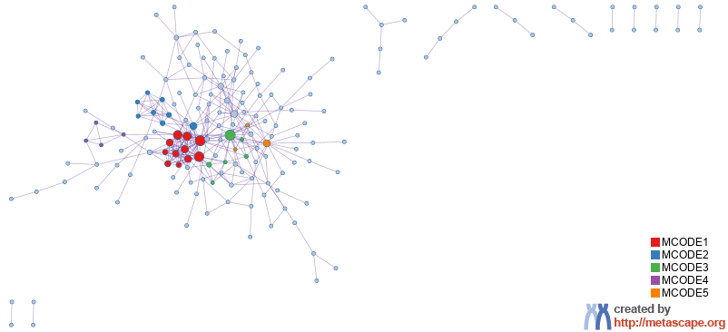
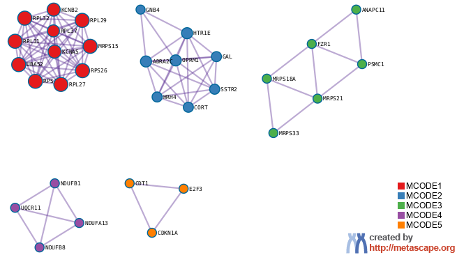

Metascape Gene List Analysis Report
metascape.org1Bar Graph Summary
Figure 1. Bar graph of enriched terms across input gene lists, colored by p-values.
|
 |
|
|
| Metascape only visualizes the top 20 clusters. Up to 100 enriched clusters can be viewed here.  |
| The top-level Gene Ontology biological processes can be viewed here.  |
{kind=link}
{kind=link}
Gene Lists
User-provided gene identifiers are first converted into their corresponding H. sapiens Entrez gene IDs using the latest version of the database (last updated on 2024-01-01). If multiple identifiers correspond to the same Entrez gene ID, they will be considered as a single Entrez gene ID in downstream analyses. The gene lists are summarized in Table 1.Table 1. Statistics of input gene lists.
| Name | Total | Unique |
|---|---|---|
| MyList | 290 | 289 |
Pathway and Process Enrichment Analysis
For each given gene list, pathway and process enrichment analysis have been carried out with the following ontology sources: GO Biological Processes. All genes in the genome have been used as the enrichment background. Terms with a p-value < 0.01, a minimum count of 3, and an enrichment factor > 1.5 (the enrichment factor is the ratio between the observed counts and the counts expected by chance) are collected and grouped into clusters based on their membership similarities. More specifically, p-values are calculated based on the cumulative hypergeometric distribution2, and q-values are calculated using the Benjamini-Hochberg procedure to account for multiple testings3. Kappa scores4 are used as the similarity metric when performing hierarchical clustering on the enriched terms, and sub-trees with a similarity of > 0.3 are considered a cluster. The most statistically significant term within a cluster is chosen to represent the cluster.Table 2. Top 20 clusters with their representative enriched terms (one per cluster). "Count" is the number of genes in the user-provided lists with membership in the given ontology term. "%" is the percentage of all of the user-provided genes that are found in the given ontology term (only input genes with at least one ontology term annotation are included in the calculation). "Log10(P)" is the p-value in log base 10. "Log10(q)" is the multi-test adjusted p-value in log base 10.
| GO | Category | Description | Count | % | Log10(P) | Log10(q) |
|---|---|---|---|---|---|---|
| GO:0072657 | GO Biological Processes | protein localization to membrane | 20 | 6.97 | -7.49 | -3.31 |
| GO:1903530 | GO Biological Processes | regulation of secretion by cell | 21 | 7.32 | -6.86 | -2.99 |
| GO:0099536 | GO Biological Processes | synaptic signaling | 16 | 5.57 | -5.02 | -1.88 |
| GO:0007005 | GO Biological Processes | mitochondrion organization | 15 | 5.23 | -4.76 | -1.68 |
| GO:0002181 | GO Biological Processes | cytoplasmic translation | 8 | 2.79 | -4.63 | -1.59 |
| GO:1990778 | GO Biological Processes | protein localization to cell periphery | 11 | 3.83 | -4.59 | -1.59 |
| GO:0031099 | GO Biological Processes | regeneration | 8 | 2.79 | -3.88 | -1.10 |
| GO:0050433 | GO Biological Processes | regulation of catecholamine secretion | 5 | 1.74 | -3.76 | -1.01 |
| GO:0051129 | GO Biological Processes | negative regulation of cellular component organization | 18 | 6.27 | -3.66 | -0.97 |
| GO:0048706 | GO Biological Processes | embryonic skeletal system development | 7 | 2.44 | -3.64 | -0.97 |
| GO:0002448 | GO Biological Processes | mast cell mediated immunity | 4 | 1.39 | -3.64 | -0.97 |
| GO:0030029 | GO Biological Processes | actin filament-based process | 16 | 5.57 | -3.56 | -0.93 |
| GO:0001508 | GO Biological Processes | action potential | 6 | 2.09 | -3.34 | -0.78 |
| GO:0000278 | GO Biological Processes | mitotic cell cycle | 15 | 5.23 | -3.29 | -0.78 |
| GO:0007193 | GO Biological Processes | adenylate cyclase-inhibiting G protein-coupled receptor signaling pathway | 5 | 1.74 | -3.13 | -0.70 |
| GO:0022407 | GO Biological Processes | regulation of cell-cell adhesion | 13 | 4.53 | -3.02 | -0.62 |
| GO:0007423 | GO Biological Processes | sensory organ development | 14 | 4.88 | -2.86 | -0.54 |
| GO:0060343 | GO Biological Processes | trabecula formation | 3 | 1.05 | -2.83 | -0.51 |
| GO:0045931 | GO Biological Processes | positive regulation of mitotic cell cycle | 6 | 2.09 | -2.81 | -0.50 |
| GO:0009062 | GO Biological Processes | fatty acid catabolic process | 5 | 1.74 | -2.75 | -0.46 |
Figure 2. Network of enriched terms: (a) colored by cluster ID, where nodes that share the same cluster ID are typically close to each other; (b) colored by p-value, where terms containing more genes tend to have a more significant p-value.
|
 |
 |
|
|
|
Protein-protein Interaction Enrichment Analysis
For each given gene list, protein-protein interaction enrichment analysis has been carried out with the following databases: STRING6, BioGrid7, OmniPath8, InWeb_IM9.Only physical interactions in STRING (physical score > 0.132) and BioGrid are used (details). The resultant network contains the subset of proteins that form physical interactions with at least one other member in the list. If the network contains between 3 and 500 proteins, the Molecular Complex Detection (MCODE) algorithm10 has been applied to identify densely connected network components. The MCODE networks identified for individual gene lists have been gathered and are shown in Figure 3. Pathway and process enrichment analysis has been applied to each MCODE component independently, and the three best-scoring terms by p-value have been retained as the functional description of the corresponding components, shown in the tables underneath corresponding network plots within Figure 3.Figure 3. Protein-protein interaction network and MCODE components identified in the gene lists.
 |  | ||||||||||||||||||||||||||||||||||||||||||||||||||||||||||||||||||||||||||||||||||||||||
|
|
| ||||||||||||||||||||||||||||||||||||||||||||||||||||||||||||||||||||||||||||||||||||||||
|
|
Reference
- Zhou et al., Metascape provides a biologist-oriented resource for the analysis of systems-level datasets. Nature Communications (2019) 10(1):1523.
- Zar, J.H. Biostatistical Analysis 1999 4th edn., NJ Prentice Hall, pp. 523
- Hochberg Y., Benjamini Y. More powerful procedures for multiple significance testing. Statistics in Medicine (1990) 9:811-818.
- Cohen, J. A coefficient of agreement for nominal scales. Educ. Psychol. Meas. (1960) 20:27-46.
- Shannon P. et al., Cytoscape: a software environment for integrated models of biomolecular interaction networks. Genome Res (2003) 11:2498-2504.
- Szklarczyk D. et al. STRING v11: protein-protein association networks with increased coverage, supporting functional discovery in genome-wide experimental datasets. Nucleic Acids Res. (2019) 47:D607-613.
- Stark C. et al. BioGRID: a general repository for interaction datasets. Nucleic Acids Res. (2006) 34:D535-539.
- Turei D. et al. A scored human protein-protein interaction network to catalyze genomic interpretation. Nat. Methods. (2016) 13:966-967.
- Li T. et al. A scored human protein-protein interaction network to catalyze genomic interpretation. Nat. Methods. (2017) 14:61-64.
- Bader, G.D. et al. An automated method for finding molecular complexes in large protein interaction networks. BMC bioinformatics (2003) 4:2.